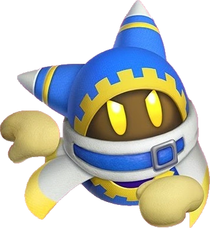

Aqui en esta pagina web explicare por el kirby-verso se solea varios otros mas y en genral nintendo es roto
1-.Por que Kirby es rotisimo
Primero su Poder normal
"Kirby's INSANE Power in Lore..."" por "LateNightPies"
"How Strong is Kirby?" by "Nintendo Unity"
"Kirby vs Goku" by "cunk fuckly"
"The Smash Ultimate CANONICAL Power Tier List" By "RelaxAlex"
"kirby fans on their way to defeat GOD for the 69420th time" by "Toxic Pea"
Sin mencionar los ultimos 3 juegos donde kirby se enfrenta a una maquina creada por una civilizacion antigua que cuple deseos un dios raro que puede soñar universos y que solo fue capturado o vencido por esa misma civilizacion o olvide emncionar que lo del sueño con menos de 50% de su poder o y volvio con CHAOS en mayusculas que es la esencia de todo en su multiverso ... si kirby no es un unierso multiverso es canonico con Dream Realm,Magolor, Another Dimension, Mirror World y quiza donde sea que ese dios anterior este y finalmente el creador de su multiverso que estaba corrompido y devoraba mundos ... a y mencione que el persoanje mas debil de kirby es posiblemente Wadle Dee Pañuelo que la ultima vez que vimos casi destruye Popstar
Sus Adversarios/Enemigos/Rivales
Primero el original Rey DeDeDe
Rey DDD es el jefe final del primer juego de kirby Kirby Dreamland ahi es un tirano que roba toda la comina de dreamland kirby siendo kirby va y le da una paliza y toma toda su comida devuealta lugo poco despues de esos eventos un DDD entrenado con la increible nueva habilidad de volar y mejoro su habilidad de absorcion que tomo de kirby el luego de esa batalla procede a ser poseido 3 veces seuidas por dark matter la cosa que basicamente todos los villanos de kirby se relacionan con y luego tiene la batalla mas epica con su mascara que lo hace bastante mas poderoso aunque pierde su habilidad de flotar por el peso y un nuevo martillo con electricidad y misiles chidos ... y pierde pero aun asi continua y consigue una amistad de con kirby y logra despues un control mental por uno de los siguenties enemigos llegamos al DDD mas fuerte de todos luego de un boost de poder de uno de los tantos satanes de kirby se ha vuelto mas poderoso y espero ver mas de el en el siguiente juego o ademas como escala de kirby es multiversal por razones que veremos mas adelante
Luego Drawcia
Convirto el universo de kirby en pintura es todo lo que debes saber sobre ella
Necrodius
Odia la luz tiene un baston magico que dividide todo y es solar debido a que odia la luz ... estrellas son la razon de luz asi que.
Magolor

Logro hacerse con la corona maestra un artefacto de poder ilimitado o sin limites como el lo llama y puede hacer agujeros negros
Fecto Elfiles
Soño un universo y mando su alma despues de morir ahi y volvio otra vez con CHAOS que es la maxima fuente de poder del kirby verso


.jpg)